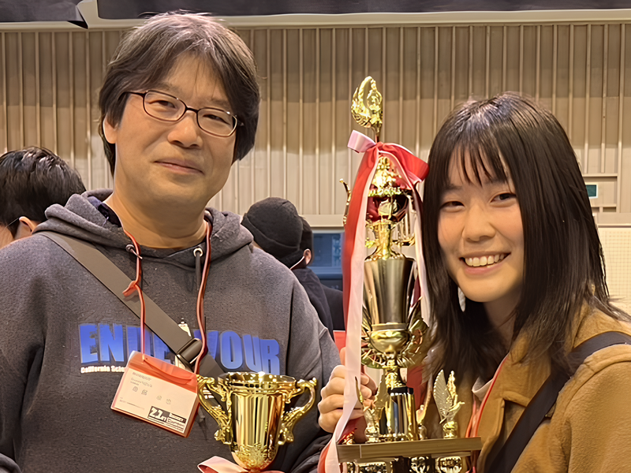

//ss 教員紹介（概要）
<!DOCTYPE html>
<html lang="ja">
<head>
    <meta charset="UTF-8">
    <meta name="viewport" content="width=device-width, initial-scale=1.0">
    <title>教員紹介</title>
    <script src="js/Seminar_header.js"></script>
</head>
<body>
  
    <script src="js/Seminar_header.js"></script>

    <!-- コンテンツが表示される領域 -->
    <div id="content" class="section-content">  <!-- ここのdiv要素の中に内容を書く。　レンダリングするためなのでここのクラス名はいじらない。--->
      <link rel="stylesheet" href="css/teacher.css"> <!-- CSSファイルを読み込む -->
    

      <!-- 教員紹介ホーム画像 -->
      <div class="teacher-title-area">
        
        <div class="teacher-title-text">教員紹介</div>
      </div>

      <!-- 教員カードのコンテナ -->
      <div class="teacher-container">
        <!-- 教員カード1 -->
        <div class="teacher-card">
          
          <div class="teacher-info">
            <p class="teacher-title">教授</p>
            <p class="teacher-kana">サイトウ タクヤ</p>
            <h2 class="teacher-name">斎藤　卓也</h2>
            <p class="teacher-detail">
              <span><strong>学系</strong><br>情報システム</span>
              <span><strong>研究室</strong><br>AI・システムデザイン</span>
              <span><strong>研究テーマ</strong><br>惑星探査ローバ、Deep Learning</span>
            </p>
            <div class="teacher-more-link">
              <a href="https://www.tuis.ac.jp/department/teacher/gakubu_informatics/saito-taku/" target="_blank" rel="noopener noreferrer">more→</a>
            </div>
          </div>
        </div>

        <!-- 教員カード2 -->
        <div class="teacher-card">
          
          <div class="teacher-info">
            <p class="teacher-title">助教</p>
            <p class="teacher-kana">アキヤマ　ミホ</p>
            <h2 class="teacher-name">秋山　実穂</h2>
            <p class="teacher-detail">
              <span><strong>学系</strong><br>情報システム</span>
              <span><strong>研究室</strong><br>AI・システムデザイン</span>
              <span><strong>研究テーマ</strong><br>惑星探査ローバ、Deep Learning</span>
            </p>
            <div class="teacher-more-link">
              <a href="https://www.tuis.ac.jp/department/teacher/gakubu_informatics/akiyama/" target="_blank" rel="noopener noreferrer">more→</a>
            </div>
          </div>
        </div>
      </div>


    </div>

    <!-- 共通部分　footer--->
    <footer>
      <div class="social-links">
        <!--twitter icon　target="_blank"で新しいタブで開く-->
        <a href="https://x.com/tuis_saitolab?s=21&t=dLSNgFhon_sUEKbFCtq_Hg" target="_blank" rel="noopener noreferrer" class="social-link">
          <i class="fa-brands fa-x-twitter fa-3x" ></i>
        </a>
        
        <!--Instagram icon　target="_blank"で新しいタブで開く-->
        <a href="https://www.instagram.com/tuis.cansat.saitolab/profilecard/?igsh=MTluMDNqNWVhOG9wYg==" target="_blank" rel="noopener noreferrer" class="social-link">
          <i class="fa-brands fa-instagram fa-3x"></i>
        </a>
      </div>

      
      <div  class="footer_section1">
        
        <div class="footer_address_infomation">
          <p>東京情報大学　〒265-0077 <br>
            千葉県千葉市若葉区御成台４丁目４−１<br></p>
          <p>7号館　4館　斎藤・秋山ゼミ</p>
        </div>
      
        <div class="footer_navigations">
          <a href="index.html" class="nav-link non-header-link" data-page="index.html">ホーム</a>
          <a href="ゼミ紹介.html" class="nav-link non-header-link" data-page="ゼミ紹介.html">ゼミ紹介</a>
          <a href="活動記録.html" class="nav-link non-header-link" data-page="活動記録.html">活動記録</a>
          <a href="教員紹介.html" class="nav-link non-header-link" data-page="教員紹介.html">教員紹介</a>
          <a href="スポンサー.html" class="nav-link non-header-link" data-page="スポンサー.html">スポンサー</a>
        </div>
        
      </div>
      
    </footer>

    </div>
</body>
</html>
